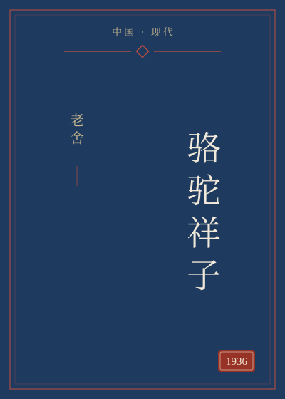

骆驼祥子
一、基本信息
| 作者 | 老舍 |
|---|---|
| 成书/出版 | 1936年9月起在《宇宙风》连载，1939年出单行本（Britannica 维基口径为1936年出版） Lao She — Wikipedia (EN)（百科全书） |
| 国别/地区 | 中国 |
| 时代 | 现当代 · 现代 |
| 体裁 | 长篇小说 |
| 语言 | 汉语（北京白话） |

《骆驼祥子》'三起三落'命运结构图（主题·结构图）
二、创作背景
老舍朋友讲述的两个真实故事（一个车夫买车三起三落、另一个被军队抓走牵回骆驼）成为小说的种子（创作缘起为作者自述大意，转述待核）。1936年，老舍辞去教职专事写作，在青岛写成《骆驼祥子》（维基条目：published in 1936——发表与单行本年份细表见待核实）。
北平人力车夫的社会生态：车厂、车份、'拉包月'与'拉散座'、兵乱抢车——小说的职业细节来自老舍对北平下层生活的长期观察。
1945年英译本（Evan King 译 Rickshaw Boy）在美国畅销，但擅自添加了 happy ending——维基条目特别记录这一'未经授权而添光明尾巴'的版本事故；1981年施小青等全译 Camel Xiangzi 恢复原貌（维基条目）。
三、内容脉络
祥子——北平的青年人力车夫，'体面的，要强的，好梦想的'——最大梦想是拥有一辆自己的车。第一起：苦干三年买车，连人带车被乱兵掳走，逃出时顺手牵回三匹骆驼，得名'骆驼祥子'。
第二起：拼命攒钱再买车，钱被孙侦探（特务）敲诈一空。第三起：用虎妞的钱买了车，虎妞难产而死，为葬妻卖车——'三起三落'完成。
双重打击：小福子（他最后的精神寄托）在白房子（妓院）自缢。祥子彻底堕落：吃、喝、嫖、赌、骗，出卖阮明换钱，最后沦为'个人主义的末路鬼'，在婚丧仪式中打旗子游荡。
全书以'体面的、要强的、好梦想的、利己的、个人的、健壮的、伟大的'祥子的堕落为主线，以阴间侦探般的笔调追踪一个美好生命被城市一点点吃掉的全过程。
四、主要人物表
| 人物 | 身份 | 说明 |
|---|---|---|
| 祥子 | 人力车夫 | 从'铁扇面似的胸'的健全青年到'堕落的、自私的、不幸的、社会病胎里的产儿，个人主义的末路鬼' |
| 虎妞 | 车厂主刘四爷之女 | 以诱骗与父权斗争嫁给祥子，难产而死——她既是压迫者也是父权的受害者 |
| 刘四爷 | 人和车厂主 | former 土混混，车厂主与父权的合体 |
| 小福子 | 被父卖入娼门的邻家女 | 祥子最后的希望，其死是压垮骆驼的最后一根稻草 |
| 曹先生 | 教书先生、雇主 | 祥子眼中'圣人'般的雇主，却也自身难保 |
| 孙侦探 | 特务 | 敲诈祥子买命钱——国家暴力对个体的抢劫 |
五、主题与艺术特点
- 个人奋斗的破产：'他不吃烟，不喝酒，不赌钱'的模范劳动者仍被社会吞噬——个体努力在结构性黑暗面前的无效（维基条目：祥子是'农民进城沦为城市游民'的社会现象的典型，'Not only a problem of particular historical period, it is an all-pervasive one'）。
- 城市对农民的吞噬：祥子是'乡下人进城'的原型——体力的、道德的、希望的总崩塌。
- 性的政治：虎妞对祥子的'诱骗'婚姻与小福子被卖的双重叙事，写穷苦女性的双重受难。
- 艺术特点：京味白话的圆熟、心理描写的细腻（祥子'三起三落'的内心独白）、雨夜拉车等著名段落的环境-心理同构。
六、影响与评论
- 维基条目：'considered to be a classic of modern Chinese literature and a contribution to the genre of world literature about laborers'（现代中国文学经典与世界劳动者文学的贡献）。
Lao She — Wikipedia (EN)（百科全书） - 维基条目：1945年英译 Rickshaw Boy 在美国畅销——但添了 unauthorized happy ending；1981年全译恢复原貌。
Lao She — Wikipedia (EN)（百科全书） - Britannica 中国文学条目以 Rickshaw Boy（Luotuo Xiangzi）作为老舍的代表作列举——北京人力车夫的故事成为国际读者认识现代中国的窗口。
Chinese literature — Encyclopaedia Britannica（百科全书） - 1982年凌子风电影版《骆驼祥子》（维基条目：the original version was made into a film of the same title）使斯琴高娃的虎妞成为银幕经典。
Lao She — Wikipedia (EN)（百科全书）
七、阅读建议
难点
- 北平白话与旧时职业词汇（车份、拉包月、白房子）需注释。
- 虎妞形象的道德复杂性（压迫者兼受害者）易被简化，宜细读。
- 结尾的彻底堕落让读者不适——这正是主题：不要期待光明尾巴（警惕1945年英译的教训）。
- 人民文学出版社《骆驼祥子》（通行本）：标准读本。
- 《老舍全集》（人民文学出版社）：研究型。
- 英译：施小青 Camel Xiangzi（1981，Indiana UP，维基条目）；Howard Goldblatt 现代译本（2010，维基条目）。
通读全书（不长，约20万字）→ 重点细读买车三段落与雨夜一章 → 对照《茶馆》看老舍北平书写的两种体裁。
八、待核实
- 连载（《宇宙风》1936年9月起）与单行本（1939年3月人间书屋说）的具体年份月份待核。
- 1945年英译者 Evan King 的删改细节（维基条目记其'brought a bowdlerized happy ending'）待核。
- 老舍创作缘起自述（《我怎样写〈骆驼祥子〉》）原文待核。
- 1982年电影版的奖项记录待核。
本页主要来源
老舍的其他收录作品：骆驼祥子